id="js_content" style="">
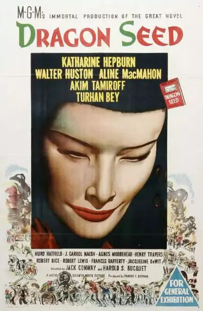
1944年，好莱坞拍了一部反映中国人抗日的“神片”《龙种》。
电影画面非常辣眼睛，主演竟然都是高鼻梁、深眼眶的外国人，他们一边说着英语一边模仿着中国人的言行举止，看的让人不禁发笑。
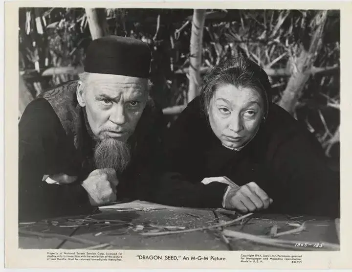
可是电影开始几分钟后，这种违和感就会消失。
细致入微的布景、认真考究的动作以及演员入木三分的表情都在告诉你这部电影不是出来搞笑的，而是真正严肃认真的作品。
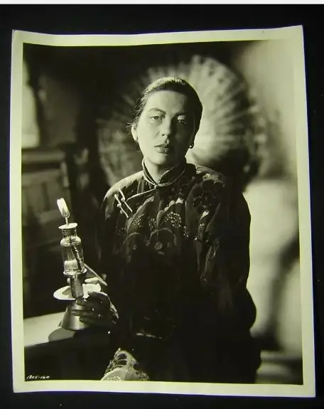
《龙种》不仅精准刻画了各个阶层中国人的特点，表现了时代变革带给旧中国的冲击，还控诉了战争对于人性的扭曲和伤害，表达了中国人争取和平的决心和勇气。
不论是在整体立意上，还是在细节刻画上，这部74年前的作品完爆如今天朝各种雷人、虚假的抗日神剧和主旋律。
电影的配乐更加厉害，电影中不仅出现了中华民国国歌《三民主义歌》，还有英文版的《义勇军进行曲》，要知道，这当时还不是我们的国歌。
可见，美国拍这部电影时，一定下了很多功夫。
要不是有姜文的《鬼子来了》，恐怕我们要可悲到最好的抗日电影竟要出自他国之手。
有网友感慨：本片没什么可说的，极好，看罢心里很凉，这是人家1944年的水平，我们还是不要拍电影了！
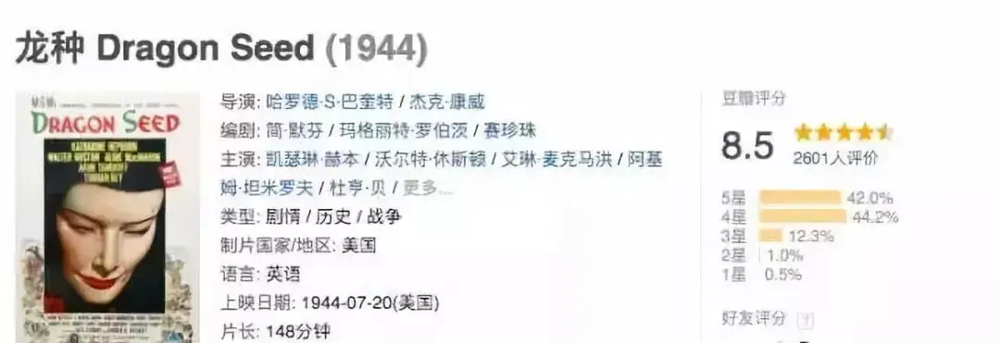
《龙种》收获当年两项奥斯卡提名，豆瓣评分也高达8.5。
之所以如此成功，最主要的功劳共归于诺贝尔奖得主赛珍珠。
△赛珍珠
她是一个美国人，因为父亲是长老会的宣教士而来到中国，她见证了旧中国是如何一步一步从血泪和苦难中走过来的。
赛珍珠对于中国人不仅有着深刻的理解，还有着极大的悲悯和同情。
她熟稔中国人的缺点，却没有讥笑和嘲讽，而是用她一部又一部伟大的作品让全世界了解了这个处在水深火热之中既聪明又愚蠢的民族。
本片就是根据赛珍珠的同名小说改编而来，通过《龙种》我们不仅能够更深地了解那个时代的历史和中国人，还会感受到这个美国人浸透其中对于中国人的悲悯。
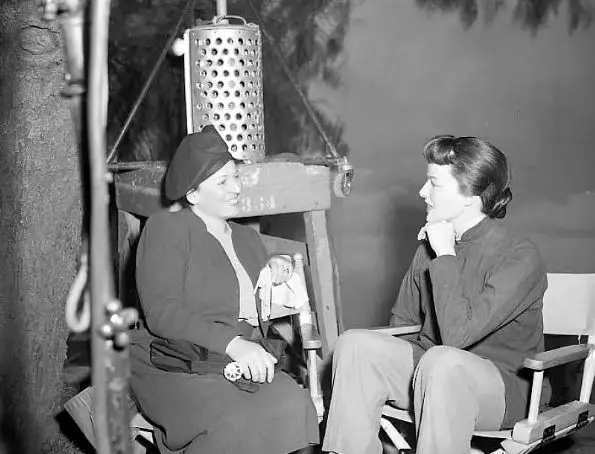
△赛珍珠与本片女主凯瑟琳·霍顿·赫本
-01-
故事发生在一个安静的农村。
谭凌老两口有三个儿子、一个女儿和两个孙子，三世同堂其乐融融。
一家人耕耘着祖辈相传的土地，自给自足，按部就班地种地、娶媳妇、生孩子已经是他们的全部。
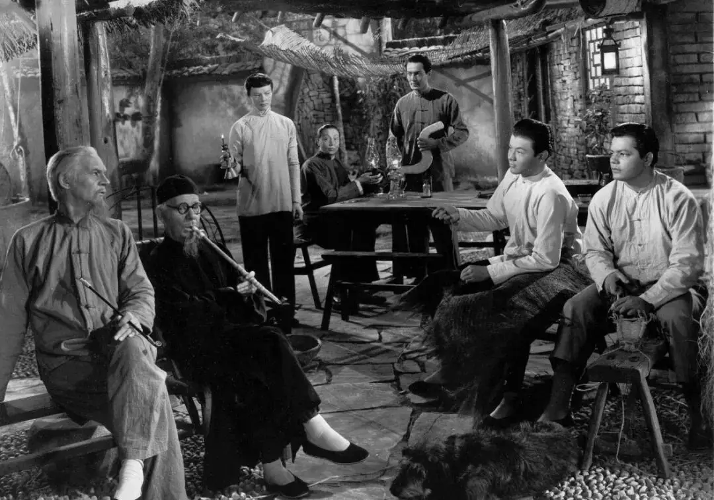
他们知道山那边有另外一个世界，却没有人翻过去看一看，因为他们已经很幸福了。
即使如此封闭，新思想的种子还是进入到了这个村子里，挑战着传统的秩序和文化。
谭二的婚姻虽是父母包办，但是谭二的媳妇小玉却是个典型的新女性。
她偷学认字，热衷了解时事，希望婚姻是建立在心意相通和彼此欣赏之上。
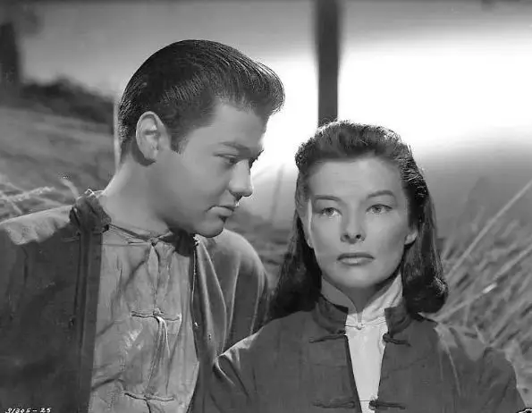
而这些在思想传统的婆婆眼中，都是一种不守礼节的忤逆，婆婆抱怨到：“女人解放了小脚就像山羊一样乱跑”。
看着小玉东奔西跑，而不是守在丈夫的身边，谭凌老两口告诫谭二“这种女人你要打，这样她才会服服帖帖”。
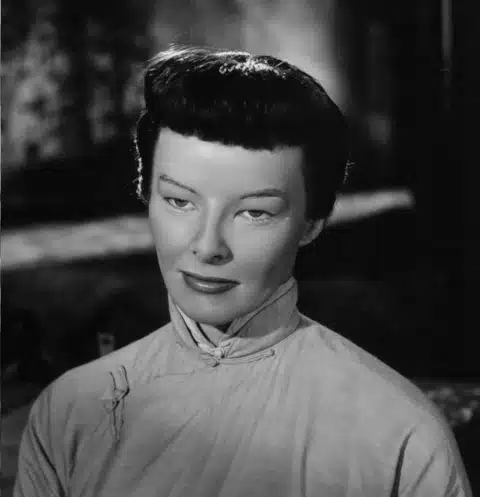
△小玉扮演者为凯瑟琳·霍顿·赫本，唯一一位能四度摘下奥斯卡影后的女星，为了这个角色，她熟读赛珍珠的作品，眼睛贴成了单眼皮。
谭二忠厚老实，他从心底里喜欢小玉，如今，小玉让他丢了丈夫的面子，他便兴冲冲地拿着柳条去找小玉。
可是一见到对方，谭二便不由地放下了柳条，试着通过尊重来得到小玉的芳心。
他问小玉对方想要什么，他都可以买给她。
小玉告诉谭二，她想要一本书，她想要读书，了解更多的知识，谭二便买了一本《水浒传》送给了小玉，这让小玉开心极了。
小玉发现谭二懂得聆听和尊重自己，慢慢地也爱上了谭二。
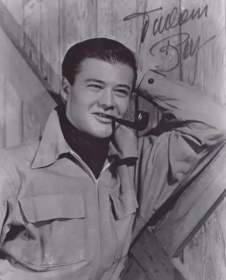
△谭二扮演者看上去很像中国人，但实际上是土耳其和捷克犹太血统在奥地利出生的演员
两人手牵手自由自在地走在田野里，可是看到家人时，谭二便松开手，在大家面前装作一副丈夫很威严的样子，小玉也配合地变得很温顺，给足了丈夫的面子。
新思想虽然还难以与旧思想抗衡，但却在不知不觉的改变着这个农村。
面对时代的变革，很小一部分人在拥抱变化，他们关心国家大事，知道日本在侵略中国，祖国正处于危机之中。
更多的人都只是两耳不闻天下事的埋头种地。
谭凌的表兄虽然是个文化人，却也一样迂腐，面对日本侵华，他却义正言辞地说：如果一个人安分守己，就算什么邪魔外道来了，也动不了他一根寒毛。
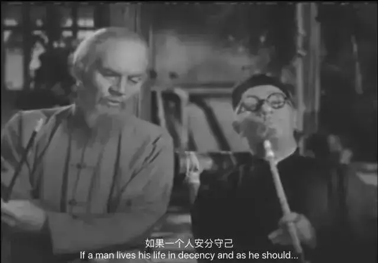
△谭凌和自己的表兄
-02-
小农的封闭和迂腐是很难改变的。
即使是日军投下的炸弹也惊不醒这些梦中人。
大家围观着炸弹炸开的大坑，有人开玩笑说“10年来我一直想在自己地里挖个池塘，这就是了。”
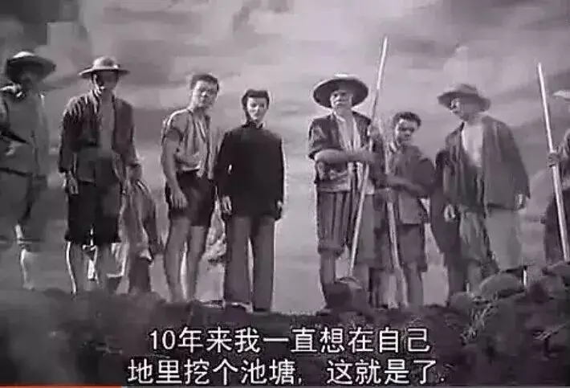
于是大家继续乐呵地生活着。
直到越来越多城里的逃难者经过这个村子时，才引起他们的恐慌。
谭凌带着老三去城里一看究竟，才发现到处都是废墟，到处都是呼喊和眼泪。
他们回来将情况告诉大家，商议是否要加入逃难大军。
可是，几乎没有人愿意离开这片生他育他的土地，仍然心存幻想鬼子打不到村子里。
只有谭二和小玉选择离开。
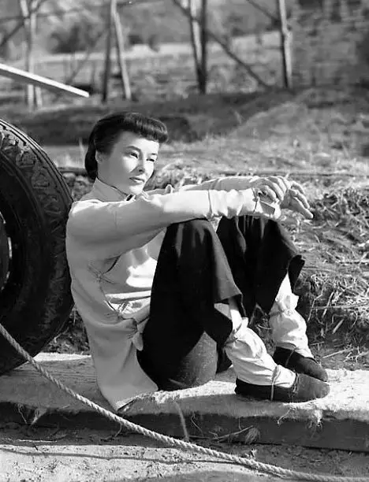
很快，鬼子来了。
他们一路烧杀抢掠，谭家四散而逃，谭凌叮嘱自己的孩子“记住千万要小心自己，不要管别人”。
最终，谭大的媳妇和两个孙子丧生。
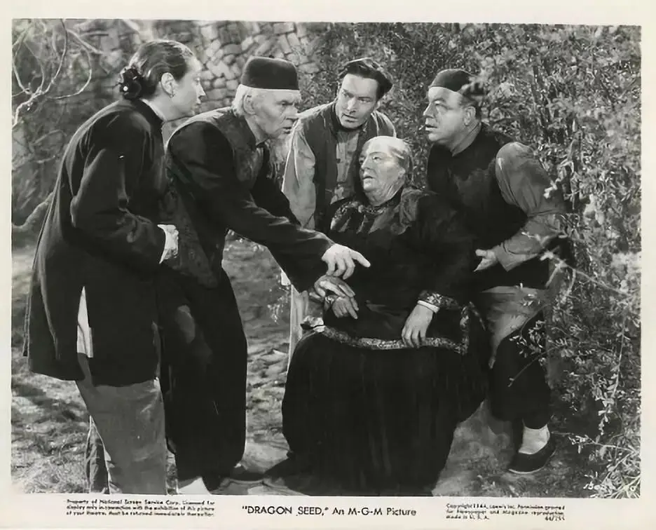
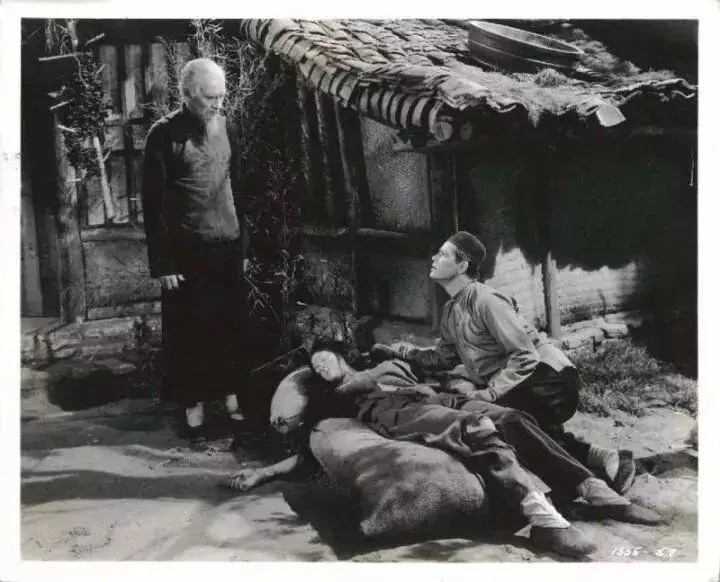
剩下的人都成为了被奴役的对象。
大家的粮食、牲畜都被鬼子抢夺，鬼子还数着数给农民发放稻米种子，让农民饿着肚子为他们种植粮食。
粮食收成了全部要上交给鬼子，不留下一粒稻米给农民。
日本人在大街小巷还贴满了良民报，报上日本人一边无耻地笑着，一边像打发乞丐一样给一群跪着的中国人撒粮。
没有想到，报纸一贴出去，中国人便争着撕抢这些良民报，不是因为愤怒，而是要抢黏在报后的浆糊充饥。
这种环境之下，总有一些人要争着做强权者的狗腿子。
谭凌的女婿陈连就是其中的一个汉奸，他这样安慰自己的良心“不论老天降下什么，我都能拿来做生意”。
在他心里卖国求荣也只是一个买卖而已。
日本人看着狗一样的陈连都不禁感慨：没有叛徒，我们怎么能征服这么大的国家！
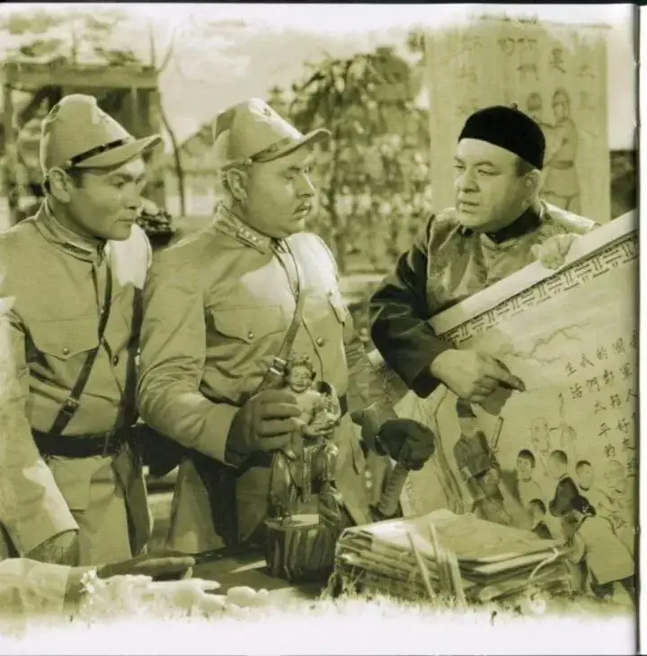
昔日的幸福转眼烟消云散，谭凌老两口几乎陷入到绝望之中。
幸好，谭二和小玉秘密回到老家，带回来的不仅有让老两口喜出望外的胖孙子，还有争取独立的自由火种。
不愿做奴隶的人逐渐站了起来！
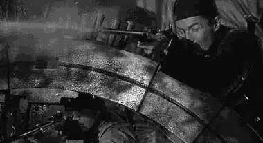
-03-
这部电影很真实。
刻画的人物不是非白即黑，而是有优点也有缺陷立体饱满的中国人。
谭凌作为一家之主以及村子里德高望重的长辈，总是很顾全大局，但是危机时，仍然会自私地告诉家人先顾好自己。
他谦虚又固执，某些事上开放，另一些事上又保守的不得了。
谭凌老伴塑造更加生动，她恪守传统反对女人读书，看不惯小玉会背地里说人嫌话，但也是刀子嘴豆腐心。
谭二和小玉离开时，这位老婆婆都没有出面告别，而是躲在溪水旁洗衣服，谭凌找到她后发现老伴在流泪，她却不承认，说是水溅在了脸上。
这个美国演员对于中国传统女性的拿捏非常到位，因此，她获得了奥斯卡最佳女配的提名。
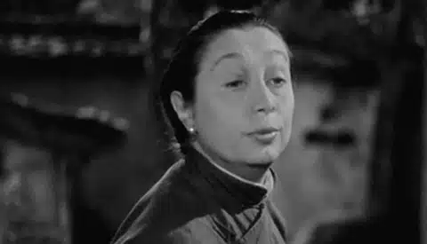
对于汉奸陈连的塑造也不是直接把他简单脸谱化，刻画为邪恶的代表，而是一个软弱自私、圆滑世故但却良心未泯、护妻爱子的复杂人物。
陈连既想讨好日本人，又不愿意出卖村里的同胞，他想要在乱世中做个中立分子，活的也非常割裂。
当因小玉让他快要丧命的时候，陈连唯一想到是让妻儿逃命，而不是报复和仇恨。
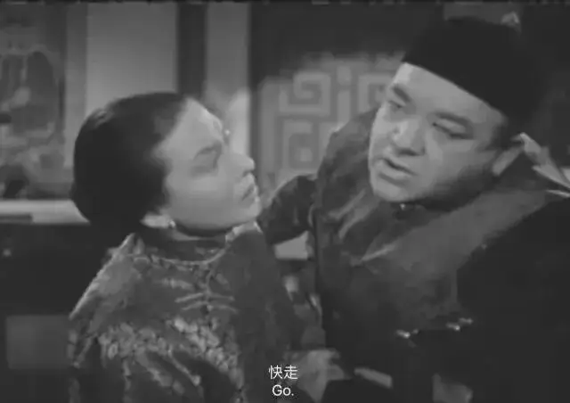
除了人物塑造的非常真实，电影布景更是让人难辨真假。
当时中国正处在战争中，制作团队不可能来中国取景拍摄。
所以他们在美国圣费尔南多峡谷的卡拉巴萨斯上进行了布景。
他们将五十英亩的山地改造成梯田，十二英寸粗的管子铺了一英里长，以便用五百万加仑的水把这个地区淹没。
另外还修了稻田，用大麦代替水稻，在美术导演的监督下还盖起了十间农舍。
这种专业精神让这部作品看上去真实无比。
-04-
这部电影很深刻地揭露了日本侵华带给中国农民的悲剧。
电影前半部分刻画了小农经济下的旧中国，对于他们来说最重要的就是自己的家族和世代相传的土地。
中国近代虽然出现了城市化和商业化，但还不足以冲击到小农的这两个命脉。
因此以小玉为代表的新一代，他们虽然受到了新思想的影响，但只能在小农社会的秩序里小打小闹。
日本发动的侵华战争则彻底地埋葬了中国农民的希望。
因为战争，很多农民失去了自己的亲人，但即使非常悲痛，只要还有土地，中国人还可以咬着牙继续活下去。
土地给了中国农民最大的安全感和希望，谭凌所在的农村因为这片土地而拒绝逃难。
后来即使家人被日本人杀害，他们依旧忍气吞声地耕耘着自己的土地。
甚至，当日本人完全剥夺了土地的收成后，他们都难以放弃自己的土地，毕竟，那可是祖祖辈辈传下来的基业。
最后，为了让鬼子断粮，谭家终于下定决心要烧掉自己的房子和土地时，老两口在地上做了标记，叮嘱自己的孩子，等打退了日本人，你们一定要回来认我们的土地。
那种中国老农和土地的特殊感情令人动容，是战争毁掉了中国农民的希望和幸福，毁掉了中国农民和先辈得以情感联系的租屋，让中国人成为了流离失所的落难者。
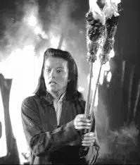
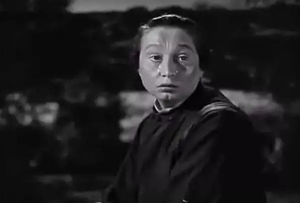
△母亲最后失魂落魄地告别住了几代人的祖屋。
-05-
好的战争片一定不会激起你的戾气，一定会带给你很多思考。
这部电影做到了，它从人性的高度反思了战争。
面对日本侵华，谭家三个儿子咬牙启齿，誓要杀光日本鬼子报仇雪恨。
谭凌也是如此，他也恨日本人。
但当他亲眼目睹自己的儿子像杀牲口一样用锋利的刀捅入日本人的身体时，他害怕了。
自己的儿子忽然变得很陌生，不再像以前那样善良，不再是那个骑着牛吹着笛子的快乐小伙，他们杀人的样子很狰狞。
如果我们也变成了像对方一样杀人不眨眼的禽兽，那有何意义？
这位淳朴的老农民从没有见过这样可怕的场面，谭凌陷入到绝望和消沉之中。
当谭凌将自己的疑虑告诉孩子时，孩子们也承认确实如此。
他们也不喜欢这样，他们也不喜欢上一刻杀了人手里沾满了鲜血，下一刻却用这双手喂养自己的孩子。
可是，他们又能如何，是日本人把刀架在了我们的脖子上。
小玉真诚地告诉谭凌：
我们都杀过人，我们都无法回到从前。
但是您的小孙儿，当他只能靠欺诈生存，我们怎能教会他诚实？
当不是你死就是我亡的时候，我们怎会教他仁慈？当他只看见猜忌，或者家人是叛徒的时候，我们怎能教会他信任？
除非我们把日本人赶出国门，并防止他们故伎重演。
对！为了让孩子活在和平年代，为了让孩子不像我们一样被战争异化，谭凌和村民们必须要站起来抗击日本人。
谭凌备受鼓舞，最后抛弃租屋和土地，抱着孙子逃往自由区。
他们牺牲一切要守护龙的传人，要让孩子享受自由和和平，这是他们全部的希望，所以电影名字叫《龙种》！
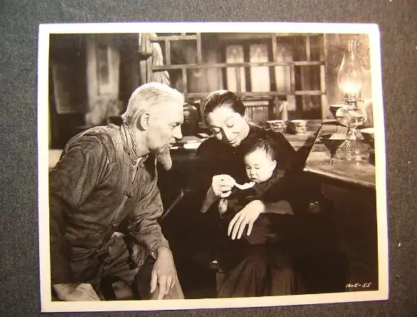
走过真实的历史处境，反思中国人的民族性格，控诉战争带给人们的灾难，最后升腾出震撼人心的力量。
这绝对是主旋律，是真正的主旋律，是正确三观、普世价值下的优秀作品。
反观我们自己的作品，个人英雄主义、丑化日本还是轻的，无视历史真相，借着抗日神剧寻找虚假民族自信以及感官快感的无良作品更加可怕。
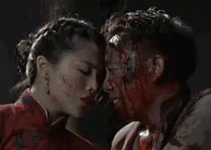
没有反思，没有严肃，更没有对于历史真实的表现。
经历过战争的人，看着手撕鬼子可以大快人心。
没有经历过战争的人，可真的会以为战争像打游戏一样充满刺激和快感。
比遗忘历史更可怕的是满脑子的假历史和垃圾。
夜郎自大是会上瘾的，终会让我们付出更加惨痛的代价!
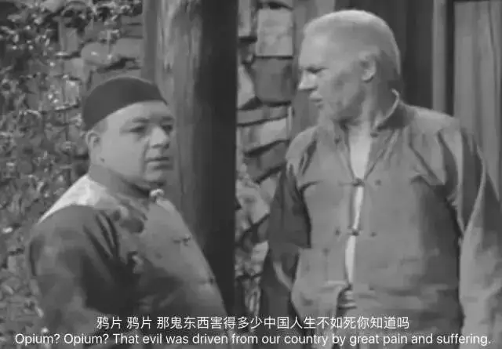
这里没有挑逗你眼目情欲的小鲜肉
也没有挑动你肉体情欲的段子
更没有膨胀你今生骄傲的鸡血
我们只在乎那些最质朴真诚的作品
在那里我们才能恢复真正的想象力
我们也坚信这才是我们真正需要的

ID:Six_hundred_hits
长按二维码，一键关注
【六百击】
-END-
电影评论
尽情分享朋友圈

苹果打赏通道
小提示：文末广告是腾讯配送广告，内容与本号无关，但您的每次点击（无需反复点）都会给平台带来几毛收益，欢迎您点击支持六百击。